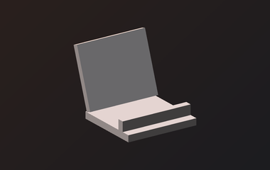
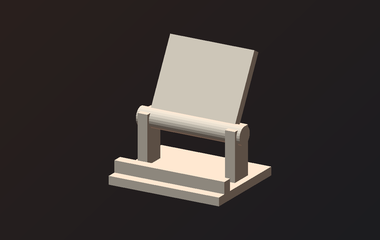
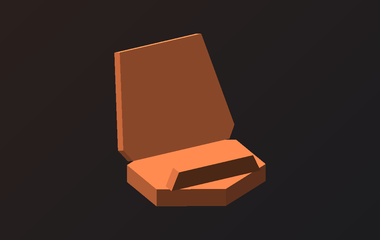

Type what you want to print.
Slicely finds the model, slices it for your printer, and sends it over.
Find a free 3D model, slice it, and print. Right from your phone.
Find me a phone stand I can print today Slice this for strength, PETG, my Ender 3 Show me a cable clip for a desk


How it works
-
01
Sign in, or bring a key
Google or GitHub gets you 50 cents of credit to try it. Your own key unlocks every model.
-
02
Ask for anything
Describe it, paste a link, or drop in your own STL.
-
03
Slice and send
Slicely picks the orientation and settings, then sends the G-code to your printer.
What it does
Find, slice, send. Slicely is not a CAD tool: it works with models that already exist, plus whatever you bring it.
-
Eight sources at once
Thingiverse, Printables, MyMiniFactory, MakerWorld, NIH 3D, Smithsonian, NASA and GitHub, ranked together. One being down never blanks your results.
-
Paste a link, or drop a file
A model page, a raw
.stl, a.zipof parts or a GitHub repo. Or drag in STL, 3MF, OBJ, AMF, STEP. -
Settings from the geometry
Poses scored on overhang, bed contact and layer count. Layer height, infill, walls, supports and brim derived from the mesh and your goal: fast, detail or strength.
-
Multi-part jobs
Dozens of parts planned as one job: oriented, grouped for the fewest tool changes, packed across plates and sliced in order.
-
Multi-colour
Split one STL into the parts inside it so each gets its own filament, or band it by height with a swap pause. AMS or not.
-
Six ways to a printer
OctoPrint, Klipper, PrusaLink, Prusa Connect, Bambu over LAN, or a file for the SD card. Live state, temperatures, pause, resume, cancel.
Web or Mac
Mac
- Slices with your own PrusaSlicer
- Every printer, including OctoPrint, Klipper and PrusaLink on your LAN
- Opens the result in PrusaSlicer
Free to try, or bring your own key.
Sign in for 50 cents of credit, no card. Or connect an Anthropic or OpenAI key: encrypted, sent only to that provider, billed to you.